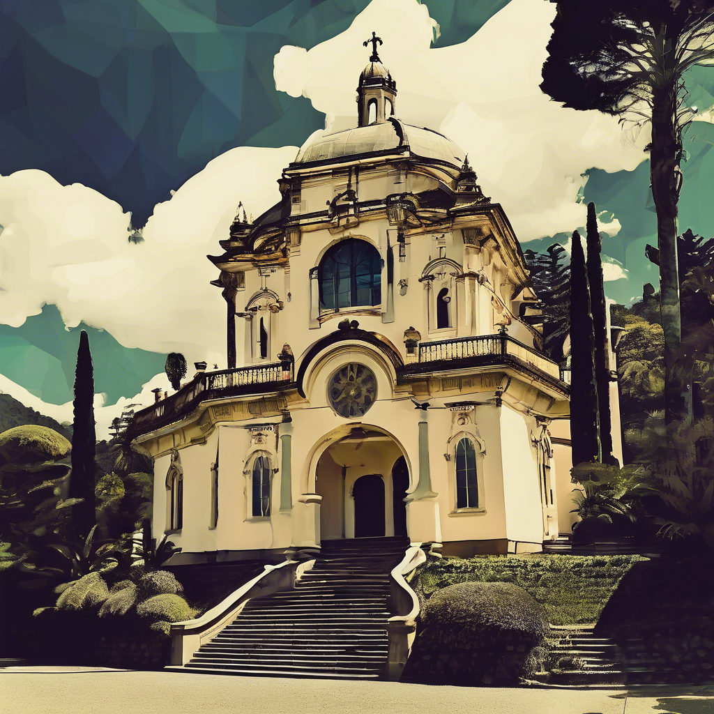
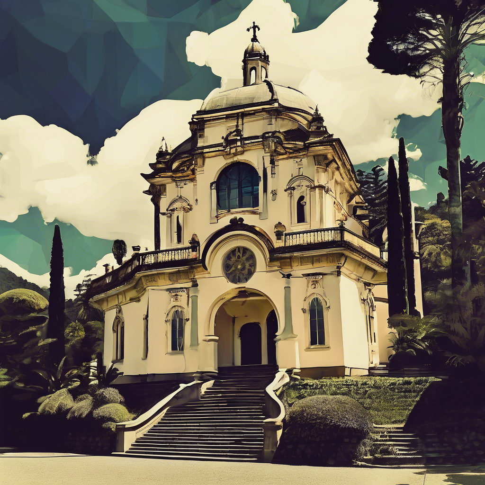

Último artículo: Mi transición al desarrollo web

Comparto mi experiencia cambiando de carrera a los 22 años y cómo encontré mi pasión en el desarrollo frontend.
Leer más
Soy un apasionado desarrollador web frontend con 3 años de experiencia, especializado en crear experiencias digitales accesibles y responsive.
Vivo en Bogota, colombia, una ciudad que me inspira diariamente con su mezcla de arquitectura moderna y histórica, perfecta para mi amor por la fotografía urbana.
 


Comparto mi experiencia cambiando de carrera a los 22 años y cómo encontré mi pasión en el desarrollo frontend.
Leer más